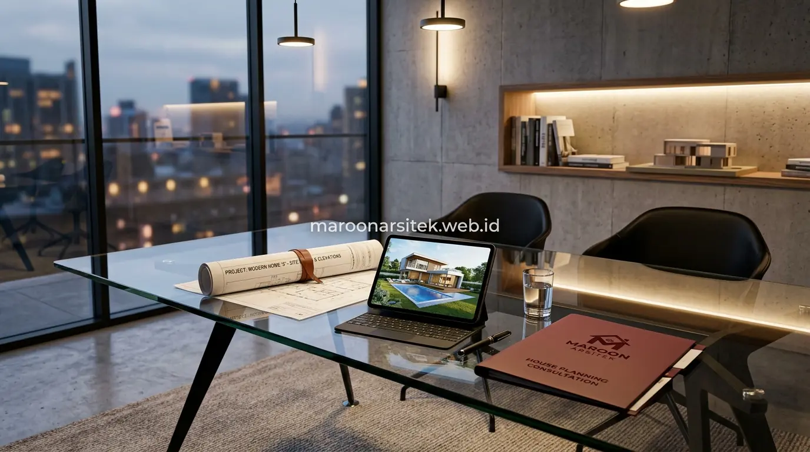

Anggapan bahwa jasa arsitek hanya menambah biaya sering muncul karena manfaatnya tidak terlihat langsung di awal proyek, padahal kesalahan yang terjadi tanpa perencanaan matang justru berpotensi menimbulkan biaya perbaikan yang jauh lebih besar. Bersama jasa arsitek rumah tinggal dari Maroon Arsitek, Anda mendapatkan kepastian rancang bangun yang terukur, aman, dan efisien secara anggaran.
Perencanaan Tata Ruang yang Mencegah Kesalahan Fungsi Bangunan
Perencanaan tata ruang yang matang oleh arsitek memastikan setiap ruangan memiliki fungsi, ukuran, dan posisi yang sesuai kebutuhan penghuni sebelum konstruksi dimulai, sehingga mencegah kesalahan fungsi yang baru disadari setelah bangunan berdiri. Kesalahan semacam ini sulit diperbaiki tanpa biaya tambahan yang signifikan setelah konstruksi selesai.
- Pemetaan Alur Sirkulasi: Menata zonasi ruang privat, semi-publik, dan servis agar aktivitas sehari-hari keluarga berjalan nyaman tanpa gangguan alur lalu lintas antar ruang.
- Optimalisasi Cahaya dan Udara Alami: Menentukan orientasi bukaan jendela dan void ventilasi silang (*cross ventilation*) guna menekan konsumsi listrik pendingin ruangan.
- Efisiensi Anggaran: Peninjauan tata ruang pada tahap desain jauh lebih murah dibanding melakukan pembongkaran dinding setelah struktur beton terbangun.
Kesalahan Umum akibat Tata Ruang Tanpa Perencanaan Matang
Kebutuhan untuk menghindari kesalahan fungsi ruang dijawab melalui identifikasi pola aktivitas penghuni sejak tahap konsultasi awal dengan arsitek, sebelum denah rumah difinalisasi menjadi gambar kerja yang siap dieksekusi kontraktor.
Identifikasi ini mencegah masalah seperti ruang keluarga yang terlalu sempit untuk aktivitas berkumpul, atau dapur yang tidak memiliki sirkulasi udara memadai akibat posisi yang kurang tepat dalam denah keseluruhan rumah.
Ketepatan Gambar Kerja sebagai Acuan Pelaksanaan Konstruksi
Gambar kerja yang disusun arsitek menjadi acuan teknis bagi kontraktor dalam melaksanakan konstruksi, mencakup detail ukuran, spesifikasi material, dan titik-titik struktural yang harus dipatuhi agar hasil bangunan sesuai rencana. Tanpa gambar kerja yang jelas, interpretasi di lapangan dapat berbeda-beda antar tukang yang mengerjakan proyek.
Ketidaksesuaian antara ekspektasi klien dan hasil konstruksi sering terjadi akibat instruksi lisan yang tidak didukung gambar teknis yang lengkap, sehingga detail penting seperti ketinggian plafon atau posisi bukaan jendela dapat salah dieksekusi di lapangan saat memilih jasa kontraktor rumah.

Koordinasi Antar Disiplin melalui Dokumen Teknis yang Konsisten
Kebutuhan koordinasi yang solid antara arsitek, kontraktor, dan tukang lapangan dijawab melalui dokumen gambar kerja yang konsisten, mencakup detail arsitektural, struktural, dan mekanikal elektrikal dalam satu kesatuan rujukan teknis.
Konsistensi dokumen ini mencegah tumpang tindih instruksi yang dapat menyebabkan kesalahan pemasangan, seperti jalur pipa yang berbenturan dengan posisi kolom struktur akibat kurangnya koordinasi antar disiplin sejak tahap desain.
Pengawasan Kesesuaian Desain Selama Proses Konstruksi Berjalan
Arsitek dapat melakukan pengawasan berkala untuk memastikan pelaksanaan konstruksi tetap sesuai dengan gambar kerja yang telah disepakati, sehingga penyimpangan di lapangan dapat segera dikoreksi sebelum berdampak pada tahap pekerjaan selanjutnya. Peran ini penting terutama pada proyek dengan detail desain yang kompleks pada proses jasa bangun rumah dari nol.
Pengawasan ini mencakup pemeriksaan kesesuaian dimensi, posisi elemen struktural, dan detail finishing tertentu yang rentan diinterpretasikan berbeda oleh tukang di lapangan tanpa panduan visual yang jelas.
Penanganan Penyesuaian Desain akibat Kondisi Lapangan
Kebutuhan fleksibilitas terhadap kondisi lapangan yang tidak selalu sesuai perkiraan awal dijawab melalui penyesuaian desain yang tetap mempertimbangkan prinsip struktural dan estetika, tanpa mengorbankan konsep utama yang telah dirancang sejak awal.
Penyesuaian ini dilakukan secara terukur, dengan arsitek memberikan alternatif solusi yang tetap selaras dengan keseluruhan desain apabila ditemukan kondisi lapangan yang berbeda dari asumsi awal perencanaan.